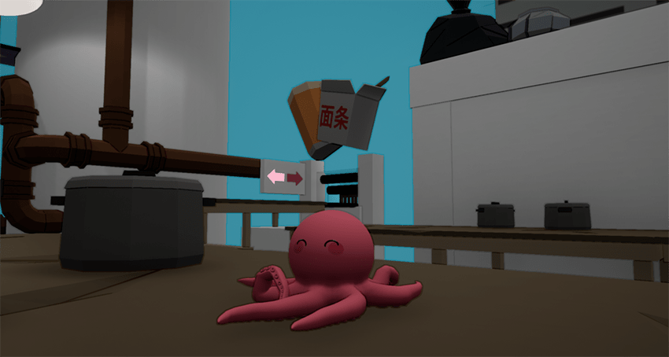
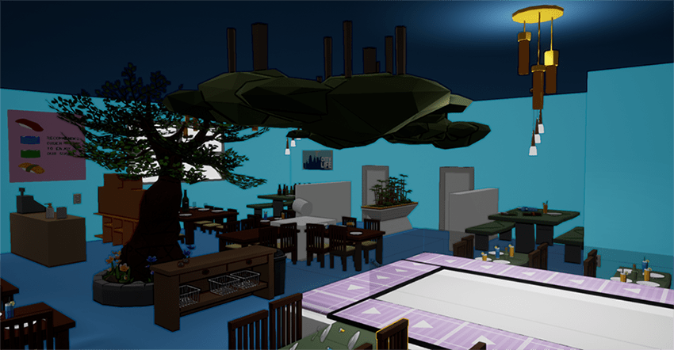
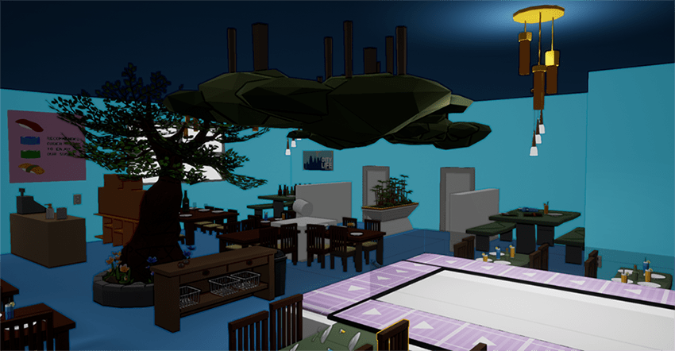

about the game
Octarina is a physics-based 3D puzzle platformer featuring a trapped little octopus who must find a way out and escape out of a sushi factory site. You play as an adorable little octopus, which is trapped inside an aquarium for its whole life. Not as a pet, but rather as a sushi ingredient. Escape your captivity and find a way out before it's too late! Use the sticky abilities of Octarina to jump, climb and cause mayhem in the factory. Discover your way to regain freedom! Octarina is in active development by a small team of master's program students from the Salzburg University of Applied Sciences.
You'll have to find a way to escape your current situation. Octarina has the ability to stick to its environment and objects. You explore the factory and try to open up new ways. To do that you climb up walls, push buttons and throw around various things to work your way through the factory to escape. There are many dangers but also secrets in the level which will challenge your finesse.
 

Additionally to its main storyline, Octarina contains two other challenging gamemodes so far. Firstly, in the “Checkpoint Race” gamemode the octopus has to navigate through the factory and reach different checkpoints within a certain timeframe. The second gamemode is “The Floor is Lava”, a gamemode in which Octarina is threatened by rising lava and the objective is to reach the goal on higher ground.